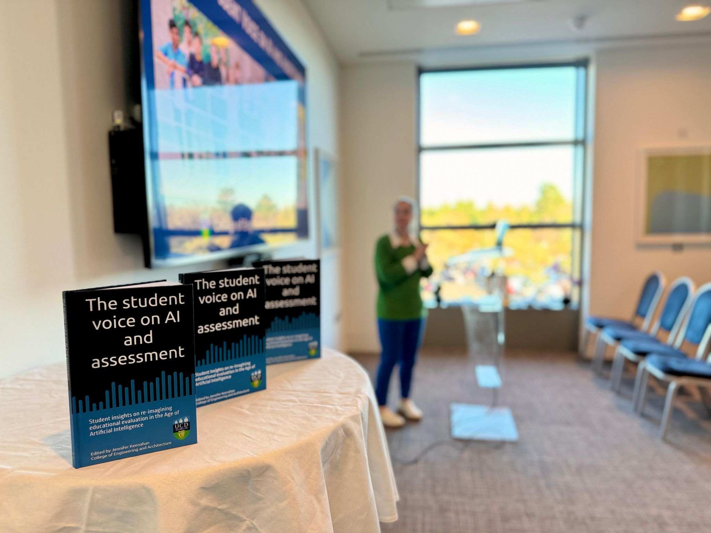
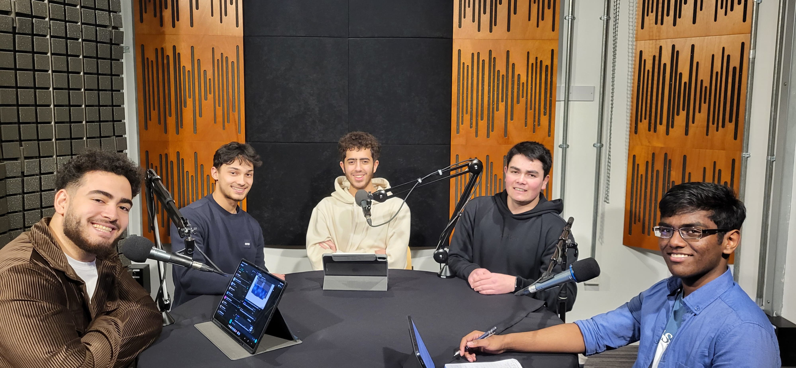

Bridges & Bytes is a podcast series from the College of Engineering and Architecture at UCD. It is a student-driven podcast that explores the role of AI in academic assessments from the students' perspective.
I worked with a group of my friends, Joe Biju, Moaz Refaei, Anrai Lawlor, and Ali Khan, to produce the 5th episode of the podcast series. In this episode, titled Reflective Assignments, we explored how the rise of generative AI has transformed reflective assessments in university settings. Alongside students and academic staff, we discussed both the challenges and creative potential AI brings to reflective writing, and how it affects student learning and academic integrity.

As the producer for this episode, I was responsible for bringing the entire production together:
Collaboration:
Worked closely with other producers to plan and coordinate the episode vision.
Studio Logistics:
Organised and prepared the recording space and equipment for a smooth session.
Pre-Production:
Helped refine the episode structure and assisted in the script editing process.
Production Support:
Ensured guests were briefed and ready, managed timing, and contributed to maintaining flow during recording.
Post-Production:
Assisted with feedback and editorial suggestions to ensure the episode met publishing quality, as well as
writing up transcripts for subtitles.
This project gave me hands on experience with media production, while also offering a front row seat to the conversation around AI in education. It sharpened my soft skills like teamwork, communication, and leadership, and it really opened my eyes into how rapidly education must adapt in this day and age.
rayfoysal@gmail.com
+353 85 103 1313 (IE)
+61 432 743 233 (AUS)